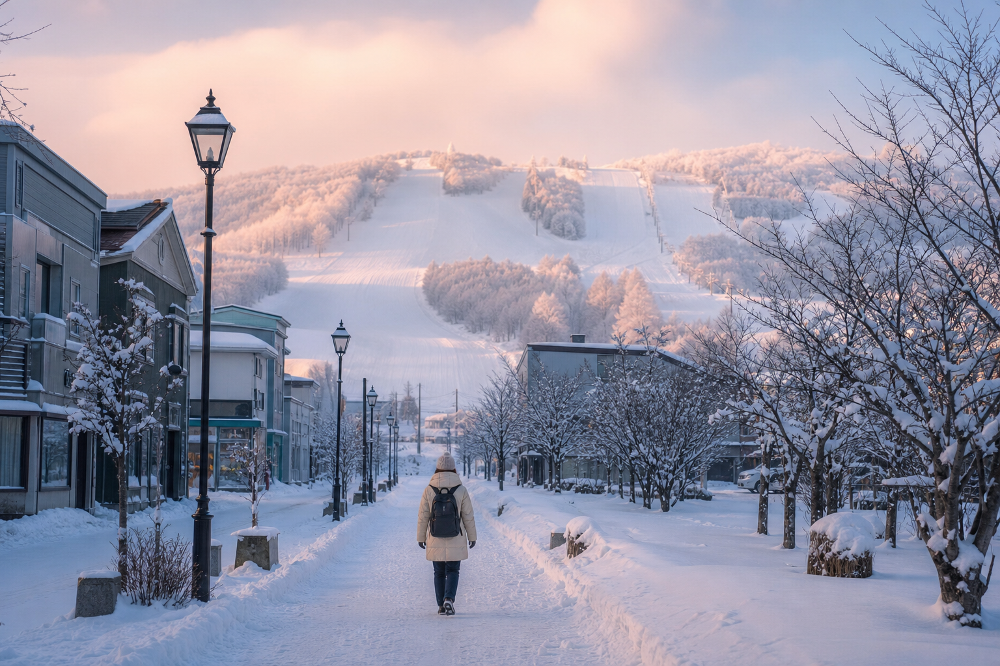

スノーウェルネス・ハブ
滑走を主目的としない、雪に触れ・感じ・心身を回復する空間。スノーシュー瞑想歩行、雪だるま、そり遊び——巨大リゾートの喧騒がない、コクーニング・ウェルネスのサンクチュアリ。
雪遊び体験を見る
Walk
JR美瑛駅から徒歩約15分。レンタカーがなくても、手ぶらのFIT旅行者が雪に直接触れられる——郊外型リゾートにはないマイクロツーリズムの拠点です。
Explore
美瑛の魅力
滑走を主目的としない、雪に触れ・感じ・心身を回復する空間。スノーシュー瞑想歩行、雪だるま、そり遊び——巨大リゾートの喧騒がない、コクーニング・ウェルネスのサンクチュアリ。
雪遊び体験を見る農地への無断立ち入りは厳禁。一方、ここでは純白の深雪に飛び込み、寝転び、自由に遊べます——「禁止の空間」から「歓迎の空間」へ。オーバーツーリズム分散の受け皿として。
レスポンシブル・トラベル
Iconic nearby
世界が知るコバルトブルー——スノーウェルネスの一日を、冬のライトアップで締めくくる。
青い池ガイドMicro Tourism
FIT旅行者が美瑛駅に降り立ってから、雪遊び・文化・絶景までを自立的に楽しむカスタマージャーニー。
特集
美瑛の丘スノーシュー「ふら～り 冬さんぽ」や Tokotoko Adventure など、公式・認定プログラムへの入口。
読む駅からスキー場までの15分を「美瑛の冬を読み解くプロムナード」へ。GPS連動オーディオガイド、手ぶらレンタル、カフェ巡り——レンタカーなしのFIT回遊導線。
読む
Mac の壁紙にもなった、コバルトブルーの池。スノーウェルネスのあと、白金温泉エリアへ——海外旅行者が最も検索する美瑛の象徴。
読む
乳製品・和牛・小麦・ラーメン——雪遊びと青い池をつなぐ周辺グルメマップ付きガイド。
読む
白金温泉から十勝岳・旭岳まで——冷えた体を温める温泉マップ付きガイド。
読むThe landscape is someone's livelihood. 農地・私有地への立ち入り厳禁。歓迎の空間で撮る、ミニマリスト写真の作法。レスポンシブル・トラベラーとしての美瑛の楽しみ方。
読むAccess